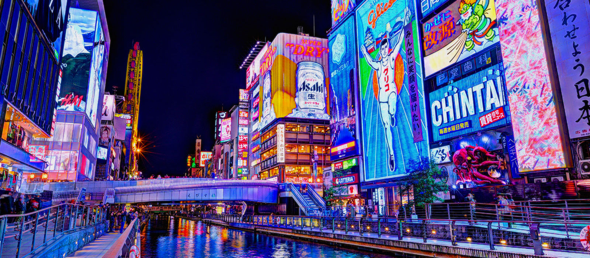
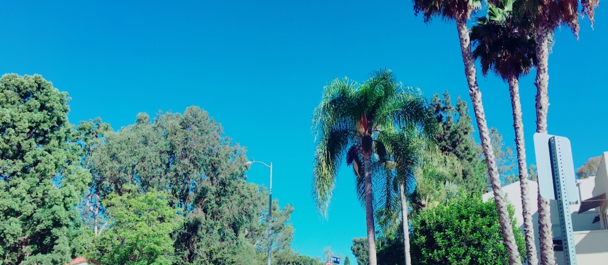
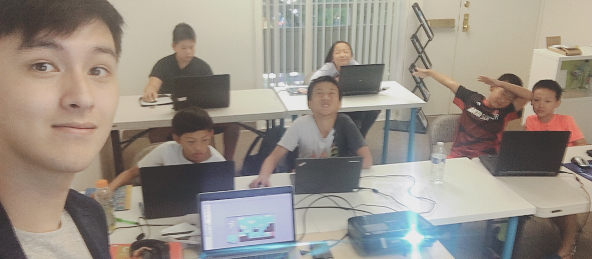
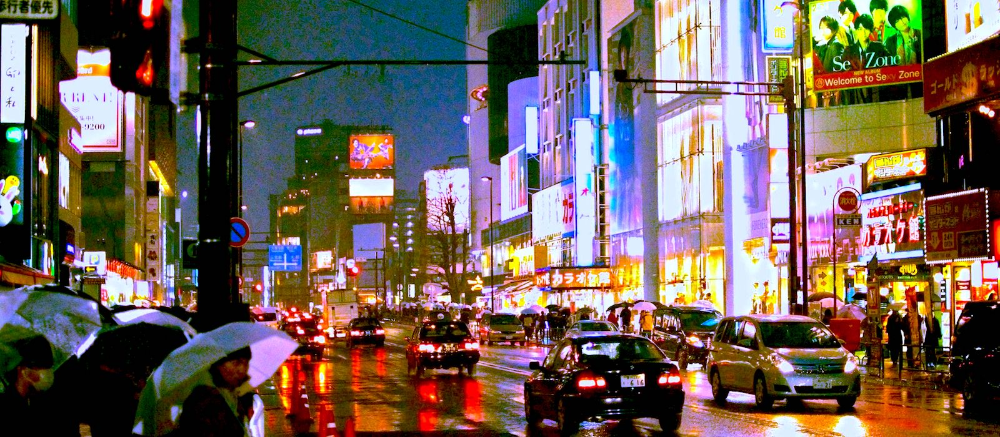

Goomba! Kuribo! Keep Looking!

Julian M. Rice
Dotonbori, Osaka

Julian M. Rice
Westwood, Los Angeles

Julian M. Rice
85 Building, Kaohsiung

Julian M. Rice
Microsoft Tiny House, UCLA

Julian M. Rice
SuperCoding, Palos Verdes

Julian M. Rice
Trials of Rice, Project

Julian M. Rice
Kushikatsu in Osaka

Julian M. Rice
Shibuya, Tokyo